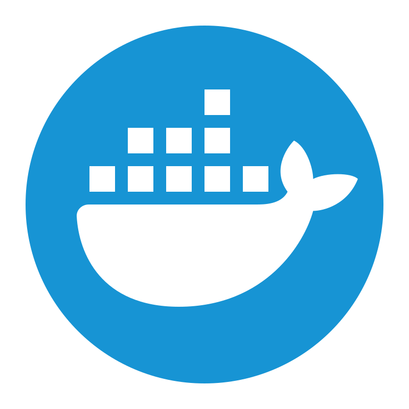

Oi! Sou o Leonardo.





Trabalho como Engenheiro de Dados há mais de 2 anos. Tenho experiência construindo arquiteturas de dados modernas (Lakehouse) de alta performance, processando múltiplos terabytes diariamente para democratizar o acesso a dados.
Meu propósito é criar soluções robustas, performáticas e de alto custo-benefício para produção e consumo de dados! Caso queira conhecer meus repositórios, clique aqui!
Abaixo estão algumas utilidades que você pode testar agora mesmo!🫡